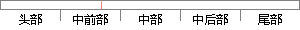

Median Mean 3rd Qu.
片段位置图

相似结果|
相似片段 1： :0.9462 Median :0.9472 Median :0.9526Mean :0.9250 Mean :0.9331 Mean :0.9313 Mean :0.92133rd Qu.:0.9473 3rd
相似片段 2：: 3572 Median :63.65综合:11 Mean :47757 Mean :23559 Mean:62.97地产:3 3rd Qu.: 7532 3rd Qu.: 5643 3rd Qu.
相似片段 3：] "data.frame" #数据??构> dim(su) #查?数据???[1] 100000 173> summary(su$rev_Mean)Min. 1st Qu. Median Mean 3rd Qu.
相似片段 4： Median Mean 3rd Qu. Max.2003-2006 0.2300 0.4700 0.5400 0.5636 0.6400 0.94002003-2004 0.2300 0.4600
相似片段 5：易通卡 5元 : 12472 Median : 0.00Mean : 113.4 Mean :1.547e+08 3G-e9-239市 : 9762 Mean : 59.783rd Qu.
相似片段 6： Median 3rd Qu. Max.BUF 3.37% 3.38% -9.47% 1.72% 3.29% 4.58% 22.14%CBUF 4.47% 3.59% -5.47% 2.65
相似片段 7：). There are more missing data in Dobson than in TOMS.Time Period Data Min. 1st Qu. Mean 3rd Qu. Max.
相似片段 8： inter-arrival time (mean, variance,1st & 3rd quartiles, median, minimum,maximum,…)Size of TCP/IP
|
※ 片段修改建议 ※
近似词参考：